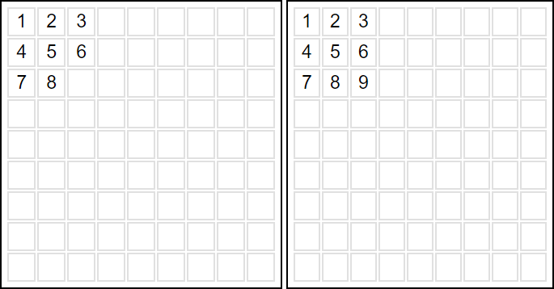
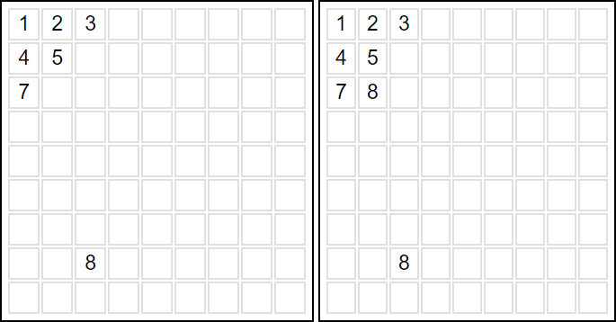

Solve Sudoku puzzles with 2 separate algorithms with a single click! Type your puzzle into the grid on the left and click solve. This may not complete every puzzle, but it can certianly assist on many!
Sudoku Solver uses 2 methods to determine how to fill the unit squares of the puzzle.
The first method is, if a unit square is the last one to be filled in its row, column, or group square, it should be the filled with the only unused number in its row, column, or group square.
The more advanced method detects if, within a row, column, or group square, there is only one option for a number to be filled. All types of groups must have one of each number, so if a number n can only exist in one square, that square can be filled with n.
